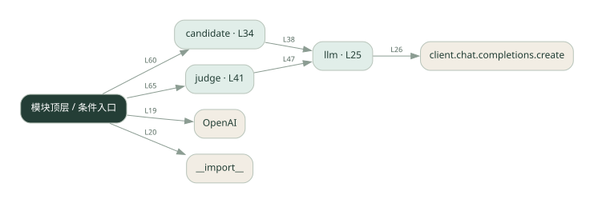

2-4 · 全课程第 24 节
竞争与裁判
023.py
源码快照 90fa735e0c59 · 静态解析 · 2026-09-10
01 / 要完成的事
多个候选独立作答，裁判比较并选择。
02 / 为什么要做
同一模型的一次答案可能不是最合适的，多个候选提供选择空间。
03 / 当前代码状态
存在外部服务或模型依赖；执行前需按源文件配置依赖和凭据，可能联网或产生 API 费用。 本次只做静态解析，没有运行练习，也没有替你填写或修改原代码。
04 / 调用图
打开大图 ↗实线：源码中的直接调用；虚线：函数引用/注册、动态调用或按方法名推断的候选。L 是调用所在源码行号。箭头不表示执行顺序或每次必经；分支、循环、异步调度及框架内部调用需结合源码。灰色是外部/未解析目标，橙色是动态分发；省略 print、len 和常规容器操作以减少干扰。孤立函数可能尚未接入。

先从 模块入口 出发，沿箭头找到本文件函数，再查看外部调用或动态分发。右侧调用清单保留所有静态调用点，能回到原文件逐行对照。
05 / 函数定位
| 函数 / 定义行 | 职责（源码注释） | 内部调用 |
|---|---|---|
llmL25 | 以源码函数体为准；下列调用展示其依赖。 | client.chat.completions.create, resp.choices[动态键].message.content.strip |
candidateL34 | 以源码函数体为准；下列调用展示其依赖。 | llm |
judgeL41 | 以源码函数体为准；下列调用展示其依赖。 | 动态对象.join, llm |
这样做的优点
候选可并列检查，容易做不同风格实验。
代价与局限
增加生成与裁判成本；裁判也可能偏好文风而非正确性。
适用场景
文案候选、受明确标准约束的方案选择。
不宜直接照搬
没有评价标准、或预算只容许一次调用的任务。
动手检验理解
交换候选展示顺序，观察裁判选择是否稳定。
有未实现位置时先预测，再补齐验证。能启动不等于逻辑正确。
查看全部 15 个静态调用 / 引用点
| 调用方 | 目标 | 源码行 | 类型 |
|---|---|---|---|
| <模块入口> | OpenAI | 19 | 调用 |
| <模块入口> | __import__ | 20 | 调用 |
| llm | client.chat.completions.create | 26 | 调用 |
| llm | resp.choices[动态键].message.content.strip | 31 | 调用 |
| candidate | llm | 38 | 调用 |
| judge | 动态对象.join | 46 | 调用 |
| judge | llm | 47 | 调用 |
| <模块入口> | print | 52 | 调用 |
| <模块入口> | print | 53 | 调用 |
| <模块入口> | print | 54 | 调用 |
| <模块入口> | candidate | 60 | 调用 |
| <模块入口> | enumerate | 62 | 调用 |
| <模块入口> | print | 63 | 调用 |
| <模块入口> | judge | 65 | 调用 |
| <模块入口> | print | 66 | 调用 |